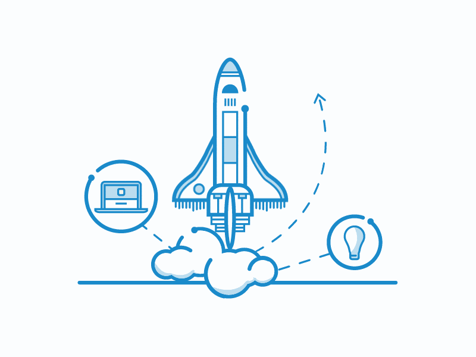
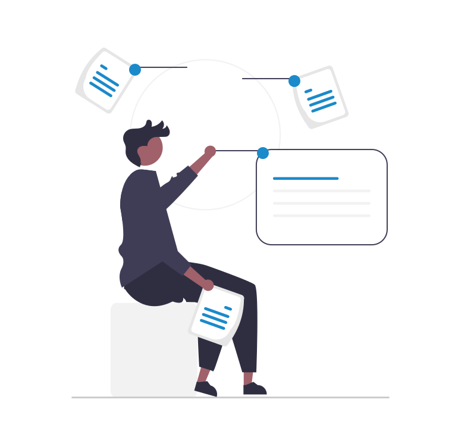

Required App
Software Design
Desarrollo de herramientas para administar y gestionar las pequeñas y medianas empresas (Pymes), optimizando el uso de estaciones de trabajo y dispositivo móviles.
Desarrollo de herramientas para administar y gestionar las pequeñas y medianas empresas (Pymes), optimizando el uso de estaciones de trabajo y dispositivo móviles.
Iniciados en enero de 1990 como DK & A IT Consulting, tras varios años de generar desarrollos para PyMes, y luego de un largo camino, replanteamos el diseño de nuestras aplicaciones de Software haciendo uso de las nuevas tecnologías apuntaladas en la movilidad, las bases de datos, el uso de la minería de datos y la nube.
Reconvertimos nuestros conocimientos y nuestros desarrollos adaptándolos al cambio disruptivo del software actual.
Por esta razón surgió RQA (Required App), un replanteo de diseño de Software acorde a las necesidades de esta década y a un nuevo tipo de usuario final. Esta es nuestra propuesta…
El diseño de Software (Software Design) lleva a modelar un sistema manual ya existente a uno automatizado; convirtiendo procesos complejos en modelos abstractos que resuelven de alguna manera las actividades repetitivas convirtiéndolas en secuencias sencillas bajo control, con usuarios que tienen cada vez más acceso a la información global Si tenemos en cuenta el actual estado de arte de la tecnología de software (SW), podremos observar que el usuario final, ya no requiere un lugar físico, por ende estas piezas de software tienen que tener la habilidad de adaptarse a los nuevos modelos de trabajo.
Enfocamos en esta nueva etapa nuestros diseños basados en la movilidad, y la virtualidad, haciendo uso de las tecnologías de hardware que evolucionan de manera acelerada, mostrando el camino a seguir.
Solo con ver a nuestro alrededor, podemos formular nuestras propias conclusiones sobre el futuro de los desarrollos de Software en este nuevo escenario.
Ofrecemos a nuestros clientes el uso y rediseño de controles administrativos, seguimientos de procesos, optimización de recursos, auditorias internas, y obtención de información en tiempo real mediante el uso de aplicaciones móviles y de escritorio en múltiples plataformas. Generamos valor agregado a la información obtenida de los datos generados que permiten tomar mejores y rápidas decisiones.
Nuestro core-business se encuentra en las áreas de gestión de procesos de negocios para Pymes mediante el uso de DKL (DekadaLight – Rqapp), nuestra plataforma tecnológica brinda una solución integral a las necesidades de información de las organizaciones y gestión de procesos.
Permitir que nuestros clientes dispongan de información de calidad para la toma de decisiones, mediante el uso de herramientas integradas.
Disponemos de aplicaciones desarrolladas sobre tecnologías escalables, bases de datos relacionales y no relacionales orientadas a objetos, desktop y móviles para permitir gestionar las empresas.
Nuestras implementaciones, diseñadas con tecnologías de avanzada permiten realizar integraciones con otras plataformas, montar servicios de acceso a datos, dispositivos Móviles y transferencias entre servidores locales y distantes Cada desarrollo está diseñado usando el mismo principio y cada implementación se realiza de la misma manera (metodología), asegurando una puesta en producción exitosa minimizando el estrés generado por la incertidumbre.
Brindamos atención al clientes por canales de contacto directo y el acceso a los dispositivos de trabajo mediante el uso de aplicaciones de “remote desktop” (escritorio remoto) y garantizar, de esta manera la asistencia y el soporte necesario.